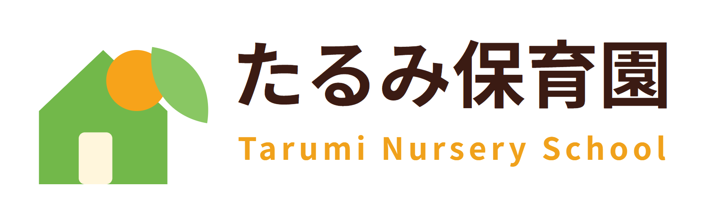
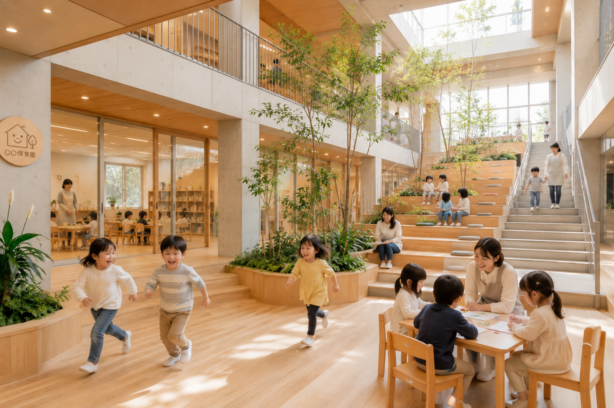
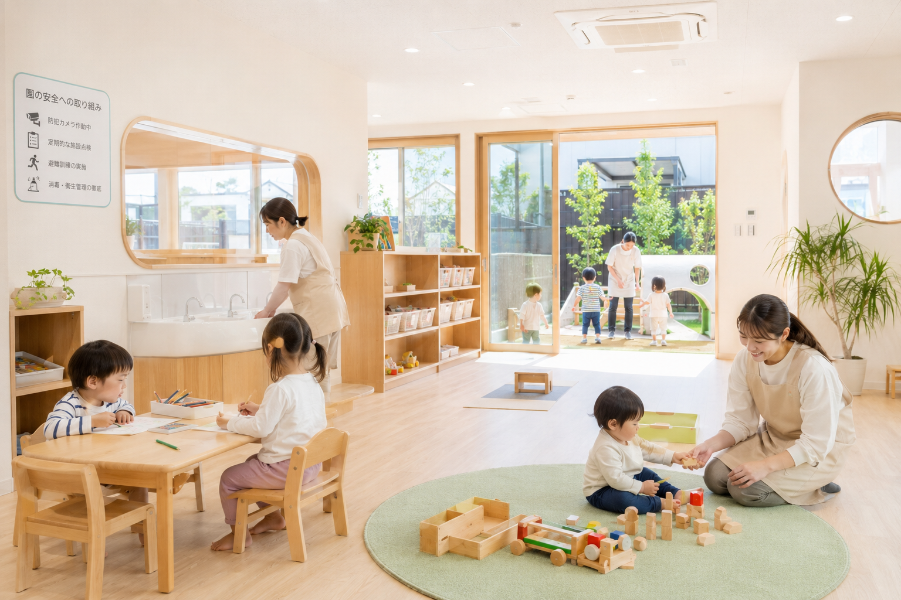
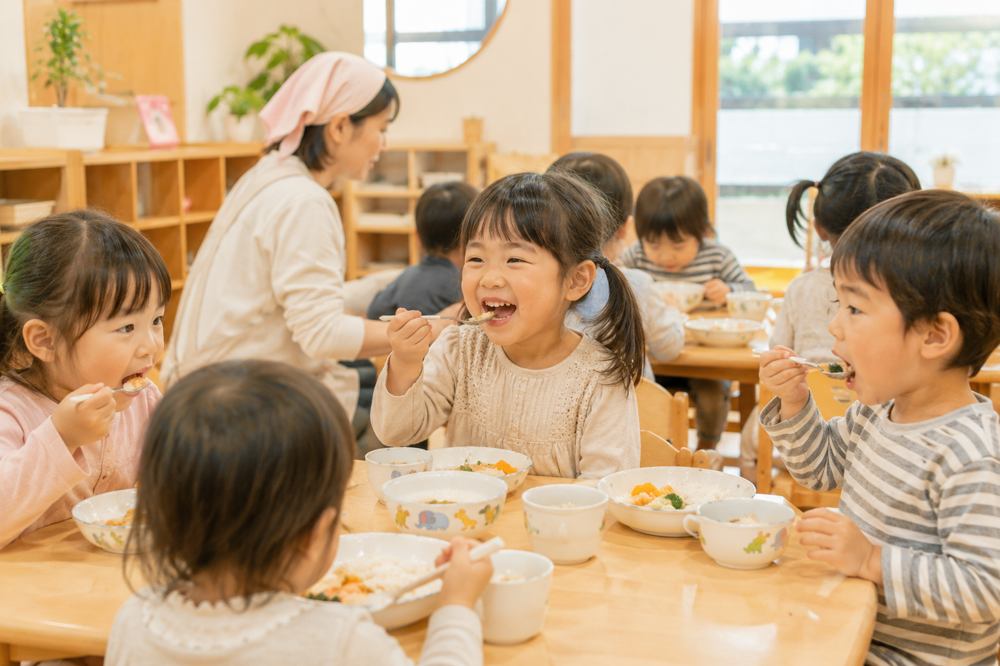

葉
のびのび育つ
自然環境
自然光あふれる設計と広々とした園庭で、子どもたちの「やってみたい！」を育みます。

2024年4月開園の新しい保育園
子どもがのびのびと育ち、笑顔があふれる毎日を。
デザイナーが手がけた新しい園舎で、あたたかい保育を実現します。
自然光あふれる設計と広々とした園庭で、子どもたちの「やってみたい！」を育みます。
色彩や素材にこだわった、温かく美しい空間。子どもも大人も心地よく過ごせる環境です。

最新の設備と衛生管理で、毎日を快適に。安心してお子さまをお預けいただけます。

少人数制のクラス編成で、丁寧に関わり、お子さまの成長をしっかりサポートします。

見学・相談会 随時受付中！